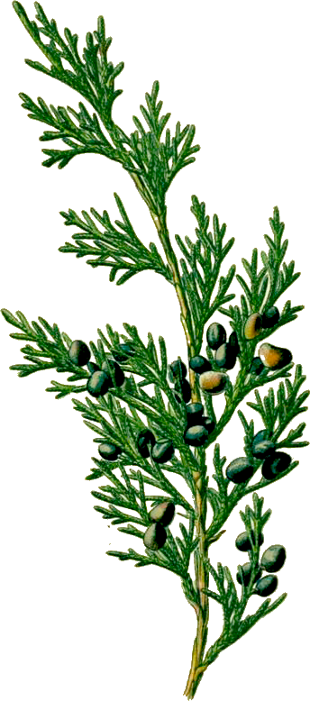

One tree is like another tree, but not too much.
One tulip is like the next tulip, but not altogether.
More or less like people — a general outline, then the stunning individual strokes.
Hello Tom, hello Andy. Hello Archibald Violet, and clarissa Bluebell. Hello Lilian Willow, and Noah, the oak tree I have hugged and kissed every first day of spring for the last thirty years. And in reply its thousand of leaves tremble!
What a life is ours!
Doesn’t anybody in the world anymore want to get up in the middle of the night and sing?
In the beginning I was so young and such a stranger to myself I hardly existed.
I had to go out into the world and see it and hear it and react to it, before I knew at all who I was, what I was, what I wanted to be
Wordsworth studied himself and found the subject astonishing. Actually what he studied was his relationship to the harmonies of the natural world. That’s what created the excitement.
I walk, all day, across the heaven-verging field. And whoever thinks these are worthy, breathy words I am writing down is kind.
Writing is neither vibrant life nor docile artifact but a text that would put all its money on the hope of suggestion. Come with me into the field of sunflowers is a better line than anything you will find here, and the sunflowers themselves far more wonderful than any words about them.
I walked, all one spring day, upstream, sometimes in the midst of the ripples, sometimes along the shore.
My company were violets, Dutchman’s breeches, spring beauties, trilliums, bloodroot, ferns rising so curled one could feel the upward push of the delicate hairs upon their bodies.
My parents were downstream, not far away, then farther away because I was walking the wrong way, upstream instead of downstream.
Finally I was advertised on the hot-line of help, and yet there I was, slopping along happily in the stream’s coolness. So maybe it was the right way after all.
If this was lost, let us all be lost always.
The beech leaves were just slipping their copper coats; pale green and quivering they arrived into the year.
My heart opened, and opened again.
The water pushed against my effort, then its glassy permission to step ahead touched my ankles. The sense of going toward the source.
I do not think that I ever, in fact, returned home.
Do you think there is anything not attached by its unbreakable cord to everything else?
Plant your peas and your corn in the field when the moon is full, or risk failure. This has been understood since planting began.
The attention of the seed to the draw of the moon is, I suppose, measurable, like the tilt of the planet. Or, maybe not — maybe you have to add some immeasurable ingredient made of the hour, the singular field, the hand of the sower.
It lives in my imagination strongly that the black oak is pleased to be a black oak.
I mean all of them,
but in particular one tree that leads me into Blackwater, that is as shapely as a flower, that I have often hugged and put my lips to.
Maybe it is a hundred years old. And who knows what it dreamed of in the first springs of its life, escaping the cottontail’s teeth and everything dangerous else. Who knows when supreme patience took hold, and the wind’s wandering among its leaves was enough of motion, of travel?
Little by little I waded from the region of coltsfoot to the spring beauties.
From there to the trilliums.
From there to the bloodroot.
Then the dark ferns. Then the wild music of the waterthrush.
When the chesty, fierce-furred bear becomes sick he travels the mountainsides and the fields, searching for certain grasses, flowers, leaves and herbs, that hold within themselves the power of healing. He eats, he grows stronger.
Could you, oh clever one, do this? Do you know anything about where you live, what if offers? Have you ever said, “Sir Bear, teach me. I am a customer of death coming, and would give you a pot of honey and my house on the western hills to know what you know?”
After the water thrush, there was only silence.
Understand from the first this certainty. Butterflies don’t write books, neither do lilies, or violets.
Which doesn’t mean they don’t know, in their own way, what they are. That they don’t know they are alive — that they don’t feel, that action upon which all consciousness sits, lightly or heavily.
Humility is the prize of the leaf-world. Vainglory is the bane of us, the humans.
Sometimes the desire to be lost again, as long ago, comes over me like a vapor.
With growth into adulthood, responsibilities claimed me, so many heavy coats. I didn’t choose them, I don’t fault them, but it took time to reject them.
Now in the spring I kneel, I put my face into the packets of violets, the dampness, the freshness, the sense of ever-ness. Something is wrong, I know it, if I don’t keep my attention on eternity.
May I be the tiniest nail in the house of the universe, tiny but useful. May I stay forever in the stream. May I look down upon the windflower and the bull thistle and the coreopsis with the greatest respect.
***
Teach the children.
We don’t matter so much,
but the children do.
Show them daisies and the pale hepatica. Teach them the taste of sassafras and wintergreen. The lives of the blue sailors, mallow, sunbursts, the moccasin-flowers. And the frisky ones — inkberry, lamb’s-quarters, blueberries. And the aromatic ones;— rosemary, oregano.
Give them peppermint to put in their pockets as they go to school. Give them the fields and the woods and the possibility of the world salvaged from the lords of profit.
Stand them in the stream, head them upstream, rejoice as they learn to love this green space they live in, its sticks and leaves and then the silent, beautiful blossoms.
Attention is the beginning of devotion.